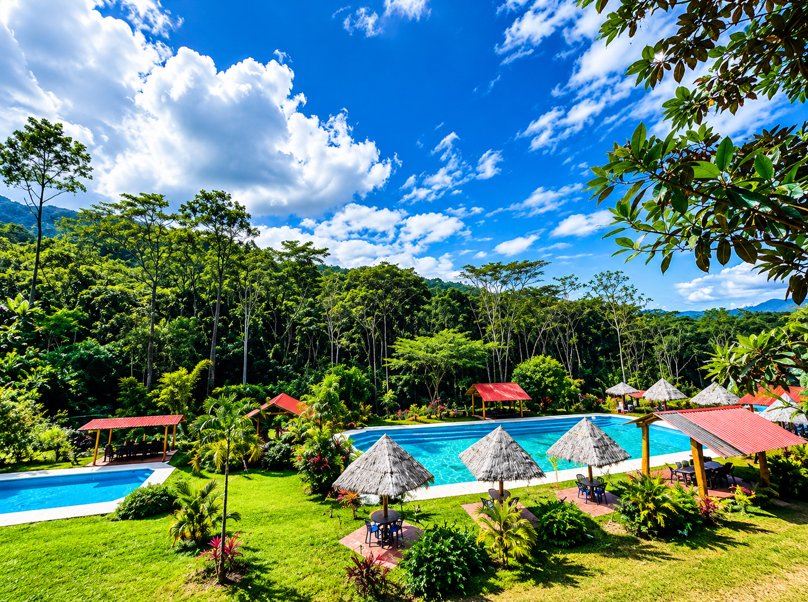

Descanso junto a la piscina
Disfruta del entorno y de un momento de pausa. Consulta con el equipo las condiciones y disponibilidad antes de tu visita.
Un recreo rodeado de selva, piscinas y sabor amazónico para compartir en familia.

En Recreo Katawa combinamos piscina natural, comida típica y espacios de juego para que cada visita sea un recuerdo.
Puedes combinar un rato al aire libre con una comida y momentos tranquilos junto a tu familia o amistades.
Disfruta del entorno y de un momento de pausa. Consulta con el equipo las condiciones y disponibilidad antes de tu visita.
Explora la carta de pescados, carnes, ceviches y platos regionales para elegir algo que acompañe el día.
El paisaje de Satipo invita a bajar el ritmo y disfrutar de una salida sin apuros.
Cada visita puede tener su propio ritmo: un momento al aire libre, una buena comida o tiempo para compartir.
Haz una pausa del día a día y disfruta del paisaje verde de Satipo.
Explora platos regionales, pescados y bebidas en la carta de la casa.
Organiza una salida con familia o amistades y consulta los detalles antes de llegar.
Escríbenos para consultar detalles de la visita y la disponibilidad de los servicios.